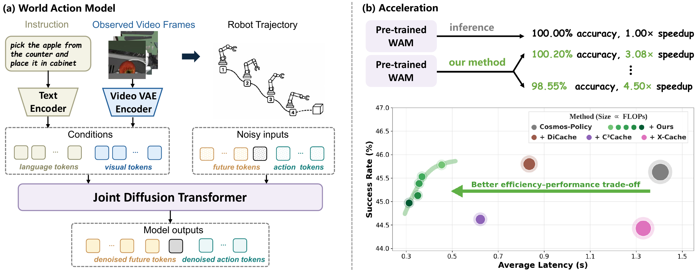
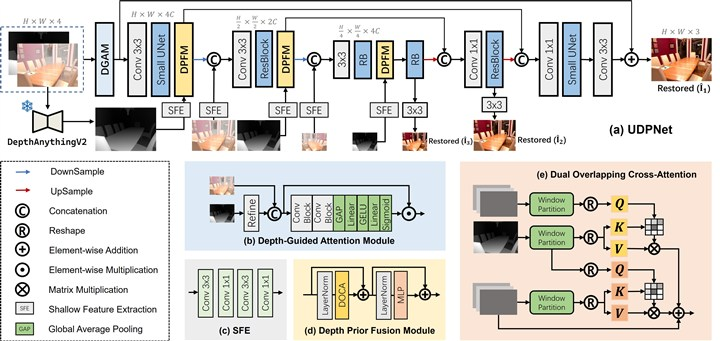

MARS: Systematic Multi-Level Acceleration for World Action Models
Zengyuan Zuo*, Yongchang Zhang*, Guangyu Zhao, Tianze Zhang, Biao Wu, Meng Fang, Yiwu Zhong
* Equal contribution.
PDFCode
M.Eng. Student
Harbin Institute of Technology
Harbin, China
I am currently pursuing an M.Eng. degree in the Faculty of Computing at Harbin Institute of Technology (HIT), advised by Prof. Junjun Jiang. I received my B.E. degree from HIT in 2024.
My research interests include low-level vision and embodied AI.
Please feel free to contact me if you are interested in my research.

Zengyuan Zuo*, Yongchang Zhang*, Guangyu Zhao, Tianze Zhang, Biao Wu, Meng Fang, Yiwu Zhong
* Equal contribution.
PDFCode

Zengyuan Zuo, Junjun Jiang, Gang Wu, Xianming Liu
arXiv preprint, 2026.

Junjun Jiang, Zengyuan Zuo, Gang Wu, Kui Jiang, Xianming Liu
IEEE Transactions on Pattern Analysis and Machine Intelligence (TPAMI), 2025.

Research Intern with Yiwu Zhong
– Present